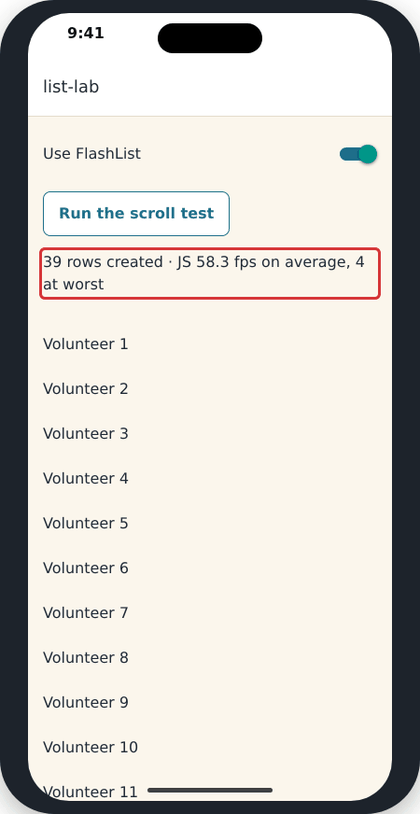
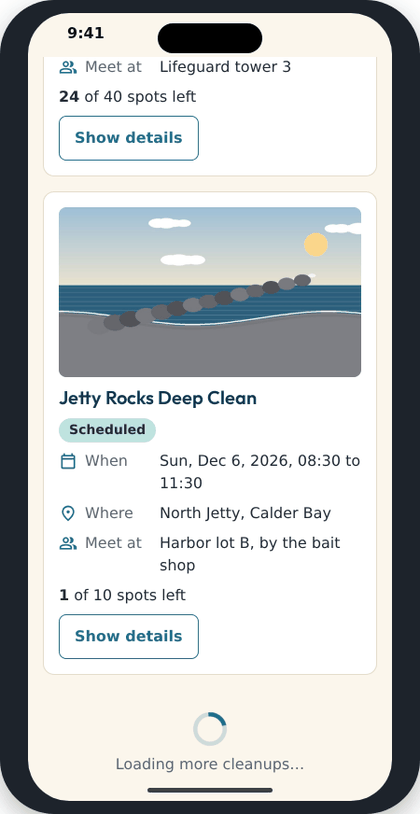

⚡ Lesson 3.2: Big Lists, Fast
A list of eight cleanups is easy. A list of eight hundred, on a five-year-old phone, while the volunteer scrolls with one thumb on a windy beach, is where apps feel smooth or fall apart. In this lesson Shoreline Crew's list moves to FlashList, a list that reuses the rows it has already drawn, loads cleanups a page at a time as the volunteer nears the end, and you measure the difference yourself instead of taking anyone's word for it.
🎯 Learning Objectives
By the end of this lesson, you will be able to:
- Explain how FlashList's recycling differs from FlatList's virtualization, and measure both in the web preview
- Move a FlatList to FlashList 2 and adapt what is different: spacing inside the cells, no padding on the list's own style, item types and column spans
- Keep each item's state with the right item when its cell is recycled, with
useRecyclingState - Load a list page by page from the API's
X-Total-PageswithonEndReached, with loading, failed and end-of-list footers that never ask twice or loop - Show items under headings in one FlashList by flattening sections into rows with sticky header indices
📦 Code for this lesson
Starting code: lesson-10-start.zip · Finished code: lesson-10-end.zip. Each folder has a README with the commands to run it.
In This Lesson
👋 Welcome: When the List Gets Long
Lesson 3.1 turned the Cleanups screen into a FlatList that draws only the rows near the screen. Two things are still missing for a list that can grow:
- The app still asks for every cleanup at once. shoreline-api answers lists a page at a time (ten items unless you ask for another size), and "Before the Next Lesson" had you look at the headers that say how many pages there are. Today the app asks for the first page, then the next one only when the volunteer scrolls close to the end: infinite scroll.
- FlatList keeps creating and destroying rows. Scroll a long FlatList and React builds new row components ahead of you and throws old ones away behind you, thousands of times in a long scroll. Shopify's FlashList takes the rows that scroll out of view and reuses them for the rows coming in. You will measure how big that difference is.
Along the way you will hit two real bugs that only appear with these techniques (a card that "remembers" another card's state, and a list that asks the server for the same page hundreds of times), see them with your own eyes, and fix them.
Why it matters for your work: "the list stutters" and "the list is slow to open" are among the most common performance complaints about React Native apps, and FlashList is the usual answer on React Native teams. Paging is everywhere a server has more than a screenful: feeds, orders, messages. Being able to say "I measured it, here are the numbers" is what separates a guess from an engineering decision.
Why it matters for the volunteers: on one bar of signal, asking for five cleanups is faster than asking for fifty, and the first cards show sooner. On an older phone, a list that reuses its rows keeps scrolling smooth.
♻️ Recycling: FlashList's Big Idea
Both lists draw only what is near the screen. The difference is what happens to a row that scrolls far out of view:
FlatList (virtualization) | FlashList (recycling) | |
|---|---|---|
| A row leaves the drawn area | Its component is unmounted: thrown away | Its component goes into a pool of spare rows of the same type |
| A new row comes into view | A new component is created and mounted | A spare row from the pool is drawn again with the new item's data |
| How much it draws ahead | About ten screens above and below (windowSize 21) | A small margin around the screen, more of it in the direction you scroll (drawDistance: 250 on phones, 500 in the web preview, from FlashList's source) |
| Where it comes from | React Native itself | @shopify/flash-list, a package (JavaScript only in version 2, so it runs in Expo Go) |
Creating and mounting a component is real work: React runs the function, builds the native views, measures them. Giving an existing row new props is much less work. That is why FlashList can draw a much smaller area around the screen and still keep up with a fast scroll.
💡 Mental model: the bucket pile at the sign-in table
Last lesson's sign-in table wrote name tags for the people in line and threw the old ones away. Buckets work differently: when a volunteer comes back up the beach, their bucket goes on the pile, and the next volunteer in line takes it. Nobody buys a new bucket for each person. FlashList treats rows like buckets. Two rules come with that: keep the buckets for different jobs in separate piles (a heading is not a card: getItemType), and empty the bucket before handing it on, or the next volunteer walks off with someone else's shells (item state: useRecyclingState).
What stays the same, and what does not
FlashList's props are almost FlatList's: data, renderItem, keyExtractor, numColumns, the header, empty and footer components, refreshing/onRefresh, onEndReached, and every ScrollView prop. You change the import and most of the list keeps working. The differences Shoreline Crew runs into:
- The list positions every cell itself, absolutely, one under the other. The content container's
gapdoes not go between items, and there is nocolumnWrapperStyle: spacing lives inside each cell. - No padding on the list's
style. FlashList's documentation forstylesays "margin is okay but padding is not". Shoreline Crew'suseScreenScrollputs the safe-area padding instyle, so that part goes on aViewaround the list. - Changing
numColumnsis fine. FlatList neededkey={columns}; FlashList lays itself out again when the number of columns changes (the course widened the window from 390 to 1024 with no key: two columns, no error). - Item types and spans.
getItemTypekeeps a separate pool per kind of row;overrideItemLayoutcan make a row span several columns. - State inside a row travels with the recycled row, unless you reset it (Common Mistakes, and Step 5).
🧩 Version note: FlashList 2
FlashList 2 was rebuilt for React Native's New Architecture, which is the only architecture in SDK 58, and it no longer needs size estimates. Many articles and answers online are about version 1 and tell you to set estimatedItemSize: version 2 does not have that prop. npx expo install picks the version that matches your SDK (2.3.2 for SDK 58).
📏 Measure, Don't Guess
"FlashList is faster" is a claim. A habit worth building now: measure before and after, on the same screen, the same way. What you can measure depends on where the app runs:
| Measure | Where | What it tells you |
|---|---|---|
| Row components created during a scroll | Anywhere (a counter in your code) | How much creating and throwing away the list does |
| Rows in the page | Web preview (count elements) | How much the list keeps drawn |
| JavaScript frames per second during a scroll | Anywhere: FlashList's useBenchmark and useFlatListBenchmark scroll the list for you and count frames | Whether your code keeps up; 60 is smooth on most screens |
| UI and JS frame rates while you scroll by hand | A phone: the developer menu's performance monitor | How the real device copes, including the native side |
| Memory, CPU, slow frames | A phone or emulator with platform tools (Lesson 8.4) | Leaks and heavy work |
The course built a temporary lab screen (you build the same one in Step 2) with 1,000 rows, a switch between FlatList and FlashList, and FlashList's benchmark hooks, then ran each list's scroll test three times in the web preview at phone size: once at full speed and once with Chrome slowing its CPU down six times, which is closer to an inexpensive phone.
| 1,000 rows, scroll to the end and back | FlatList | FlashList |
|---|---|---|
| Rows in the page when it opens | 132 | 38 |
| Row components created during the test | 5,614 to 7,895 | 39 |
| JS frames per second, full speed (average) | 53 to 60 | 57 to 58 |
| JS frames per second, CPU 6x slower (average) | 42 to 48 | 57 to 58 |
Read it from the top. FlashList keeps fewer rows in the page because its drawn area is smaller, and over a full scroll of 1,000 rows it created only a few dozen row components, because it keeps reusing them. FlatList created thousands: a new component for nearly every row it drew, and again on the way back up. At full speed both stayed close to 60 frames per second, because a desktop computer has power to spare. With the CPU slowed six times, FlatList's JavaScript fell behind while FlashList stayed near 60. Each range comes from three runs; the numbers move a little from run to run, the pattern does not. (The lab also reports the worst second, which includes the moment the test starts and jumps around a lot: compare the averages.)
⚠️ What the web preview cannot tell you
The web preview runs your JavaScript in your computer's browser, and react-native-web turns views into HTML. It is good for counting (rows created, rows drawn) and for comparing two versions of the same screen on the same machine. It says nothing reliable about a phone's native side, its memory, or its real frame rate. Two more rules from FlashList's and React Native's documentation: measure a real phone, ideally an older one, and measure a release build, because development mode adds checks that make everything slower (Module 9 makes release builds). In Expo Go, open the developer menu (shake the phone, or press m in Metro's terminal) and turn on the performance monitor to watch the UI and JS frame rates while you scroll.
📄 Page by Page: Infinite Scroll
Since Lesson 1.3, getEvents has returned a Page<CleanupEvent>: the items, plus page, perPage, total and totalPages read from the response headers. Ask shoreline-api for the second page of upcoming cleanups, five at a time, and look only at the headers:
curl -s -D - -o /dev/null "http://localhost:4000/api/events?when=upcoming&page=2&perPage=5"Expected output
HTTP/1.1 200 OK
cache-control: no-store
content-type: application/json; charset=utf-8
link: <http://localhost:4000/api/events?when=upcoming&page=1&perPage=5>; rel="first", <http://localhost:4000/api/events?when=upcoming&page=1&perPage=5>; rel="prev", <http://localhost:4000/api/events?when=upcoming&page=2&perPage=5>; rel="last"
vary: Origin
x-total-count: 8
x-total-pages: 2
Date: Sat, 14 Nov 2026 04:25:11 GMT
Connection: keep-alive
Keep-Alive: timeout=5
Transfer-Encoding: chunked(On Windows PowerShell, type curl.exe and NUL instead of /dev/null. Your Date will differ, and the header names come out in lowercase, which HTTP allows: x-total-pages is X-Total-Pages.) Eight upcoming cleanups, two pages of five. The Link header lists the first, previous and last pages too; Shoreline Crew only needs the numbers.
How infinite scroll works
- Load page 1 and show it.
- When the volunteer scrolls close to the end, the list calls
onEndReached. "Close" isonEndReachedThreshold, in screen heights: the default 0.5 means "the end is less than half a screen below what you see". - If there is a next page and nothing is already on its way, ask for it, show "Loading more cleanups…" below the last card, and add the answer after the cleanups you have.
- When the last page is in, say so: "That is every upcoming cleanup."
Three details turn this from a demo into something you can ship:
- Ask once.
onEndReachedcan be called again while a page is on its way (each time the data changes, FlashList checks the end again). Remember that a page is loading, and ignore calls until it arrives. - Stop after a failure. If the next page fails, show the error with Try again in the footer, and let only that button ask again. Common Mistakes shows what happens otherwise.
- Never show a cleanup twice. Pages are counted from the start of the list (page 2 is items 6 to 10). If a new cleanup is added before the ones you have while the volunteer scrolls, everything moves down one place, and the first item of page 2 is one you already have. Drop items whose id you already have.
💡 Mental model: the supply runs
The crew does not carry every bag and glove to the far end of the beach at dawn. A runner brings a box when the crew is near the end of the last one. Only one runner goes at a time (ask once). If the runner comes back saying the van is locked, nobody sends another runner every second; the crew leader decides when to try again (stop after a failure). And the runner checks the crew does not already have that box (no duplicates).
Filters and pages
Shoreline Crew's search and "spots left" switch filter the cleanups the phone has so far. With paging, that is not all of them: search for calder right after the screen opens and you see two Calder Bay cleanups; scroll down, page 2 arrives, and a third one (Night Heron Walk and Clean) appears. The count says "2 of 8 cleanups" and then "3 of 8 cleanups": shown out of the total the API reported. When a search leaves too few cards to fill the screen, the list is already "near its end", so it asks for the next page by itself: searching heron loaded page 2 straight away and found the cleanup. For eight cleanups this is good enough. For a catalog of thousands, the search belongs on the server (shoreline-api has a q parameter), so the server filters everything and pages the results (FAQ).
🗂️ Headings Without SectionList
FlashList has no SectionList version. Its documented way is to flatten: one array where some rows are headings and the rest are items, plus the positions of the headings in stickyHeaderIndices. With the flattenSections helper you write in Step 3:
import { flattenSections, type Section } from '@/utils/sections';
// Sections, as in Lesson 3.1 (titles stand in for the cards)
const sections: Section<string>[] = [
{ title: 'Today', data: ['Tide Pool Morning Cleanup'] },
{ title: 'Within a week', data: ['Weekend Cove Cleanup'] },
{ title: 'Within a month', data: ['Boardwalk and Mudflats', 'Family Beach Morning'] },
];
// The same groups as one array: the headings are at positions 0, 2 and 4
// [
// { kind: 'heading', title: 'Today' },
// { kind: 'item', item: 'Tide Pool Morning Cleanup' },
// { kind: 'heading', title: 'Within a week' },
// { kind: 'item', item: 'Weekend Cove Cleanup' },
// { kind: 'heading', title: 'Within a month' },
// { kind: 'item', item: 'Boardwalk and Mudflats' },
// { kind: 'item', item: 'Family Beach Morning' },
// ]
export const rows = flattenSections(sections);A discriminated union (kind: 'heading' | 'item', as in the web course's load states) tells TypeScript which fields each row has, and renderItem draws a heading or a card depending on kind. Three props finish the job:
getItemType={(row) => row.kind}: headings and cards go into separate pools of spare rows, so a heading is never reused to draw a card.stickyHeaderIndices: the positions of the headings. FlashList pins the current one at the top, like SectionList's sticky headings.overrideItemLayout: lets a row take several columns (span). A heading spans every column, so the grouped view can finally have two columns on a tablet, which SectionList could not do (Lesson 3.1's quiz).
The decision for Shoreline Crew: Lesson 3.1's grouped view becomes the same FlashList with different rows, and SectionList leaves the screen. The other options were to keep a SectionList for the grouped view (two list components to keep in step, and no columns) or to drop the sticky headings. One list means one place for paging, refreshing, empty states and spacing, and the "Group by date" switch becomes a matter of which rows you hand it. SectionList is still a fine choice for short grouped lists, such as a settings screen.
⚠️ Common Mistakes
⚠️ State that travels with a recycled card
EventCard keeps its "Show details" state inside itself with useState. That was right for FlatList, which throws a card away and creates a new one. With FlashList, the same component is handed a different cleanup. The course opened the details of the first card, Tide Pool Morning Cleanup, and scrolled down: a few screens down, the card Creek Mouth Willows showed its details open, though nobody had touched it. With useRecyclingState, the same test left every other card closed. Nothing warns you: tsc, the linter and the console stay quiet. The fix is FlashList's useRecyclingState(initial, deps), a useState that goes back to its initial value when a dependency changes, here the cleanup's id (Step 5). If the state must survive scrolling away and back (a list of favorites, say), it does not belong in the row at all: keep it in the screen, keyed by id, and pass it down (Exercise 4).
⚠️ An onEndReached that asks again after a failure
The tempting version calls the page loader directly: onEndReached={loadNextPage}, where loadNextPage only checks that there is another page. The course made page 2 fail in the web preview and scrolled to the end: the list asked for page 2 three times within a hundredth of a second, every time. In an earlier layout of the same screen it did not stop at three: hundreds of requests in a few seconds. Here is why: each failure changes the footer (spinner, then error), which changes the list's height and its rows, so FlashList checks the end again; the volunteer is still at the end, so it asks again, and fails again. Whether that dies out or runs forever depends on details such as the footer's height, which is exactly why you must not rely on it. On a phone it means a busy radio and a draining battery on a beach with no signal. The fix: only ask when nothing is loading and the last attempt did not fail; after a failure, the footer's Try again button is the only way to ask (Step 6). With the fix, the same test sent one request, and Try again sent one more.
⚠️ A key on the row inside renderItem
Habit from the web says "a list item needs a key", so renderItem={({ item }) => <Row key={item} name={item} />} looks harmless. In FlashList it defeats recycling: when a spare row is handed a new item, the key changes, so React throws the old component away and creates a new one, exactly what FlashList is built to avoid. In the lab, that one change took FlashList from 39 rows created during the scroll test to about 1,900 (three runs: 1,904 to 1,961): every reuse became a brand-new component. The key belongs in keyExtractor, which FlashList uses for its own bookkeeping; never put one on the row component.
⚠️ FlatList-only props and padding on the list
Moving a FlatList across, tsc catches props FlashList does not have. Leaving columnWrapperStyle={styles.row} on the list gives:
Expected output
src/app/index.tsx:221:9 - error TS2322: Type '{ data: SectionRow<Card>[]; keyExtractor: (row: SectionRow<Card>) => string; renderItem: ({ item: row, target }: ListRenderItemInfo<SectionRow<Card>>) => Element; ... 16 more ...; keyboardDismissMode: "on-drag"; }' is not assignable to type 'IntrinsicAttributes & FlashListProps<SectionRow<Card>> & { ref?: Ref<FlashListRef<SectionRow<Card>>> | undefined; }'.
Property 'columnWrapperStyle' does not exist on type 'IntrinsicAttributes & FlashListProps<SectionRow<Card>> & { ref?: Ref<FlashListRef<SectionRow<Card>>> | undefined; }'.
221 columnWrapperStyle={styles.cell}
~~~~~~~~~~~~~~~~~~
Found 1 error in src/app/index.tsx:221The first line is long because tsc prints the whole set of props it was given (shortened with "... 16 more ..."); skip it and read the second line: "Property 'columnWrapperStyle' does not exist". What tsc cannot catch is padding in style: it type-checks, because FlashList's style is an ordinary view style, but FlashList's documentation says padding there is not supported. Shoreline Crew puts the safe-area padding on a View around the list instead.
🛠️ Project: A Fast, Paged Cleanups List
You install FlashList, measure it against FlatList in a lab screen, turn the Cleanups screen (both views) into one FlashList, make the cards safe to recycle, and load the cleanups five at a time. Keep shoreline-api running in its own terminal (node server.ts) and Metro in another (npx expo start, then w for the web preview). Work in the shoreline-crew folder.
Step 1: Install FlashList (5 min)
npx expo install @shopify/flash-listExpected output
› Installing 1 SDK 58.0.0 compatible native module using npm
> npm install
added 1 package, and audited 795 packages in 2s
164 packages are looking for funding
run `npm fund` for details
8 moderate severity vulnerabilities
To address issues that do not require attention, run:
npm audit fix
To address all issues (including breaking changes), run:
npm audit fix --force
Run `npm audit` for details.npx expo install says it installed an "SDK 58.0.0 compatible native module" and pins the version your SDK was tested with: "@shopify/flash-list": "2.3.2" in package.json, without a ^. The audit lines are npm's usual report about the whole project, not about this package. FlashList 2 is JavaScript only, so Expo Go runs it without a development build.
Step 2: Measure first: a list lab (20 min)
Before changing the real screen, measure. Create a temporary screen, src/app/list-lab.tsx. Any file in src/app is a screen with its own address (Lesson 4.1 explains how), so this one opens at http://localhost:8081/list-lab in the web preview. It is lab equipment, not part of the app: you delete it in Step 7.
import {
FlashList,
type FlashListRef,
type BenchmarkResult,
useBenchmark,
useFlatListBenchmark,
} from '@shopify/flash-list';
import { type RefObject, useEffect, useRef, useState } from 'react';
import { FlatList, StyleSheet, View } from 'react-native';
import { AppText } from '@/components/AppText';
import { Button } from '@/components/Button';
import { useScreenScroll } from '@/components/Screen';
import { SwitchRow } from '@/components/SwitchRow';
import { spacing } from '@/theme/spacing';
// A TEMPORARY screen for measuring two lists of 1,000 rows. Delete it when you are done.
const names = Array.from({ length: 1000 }, (_, index) => `Volunteer ${index + 1}`);
const rowHeight = 48;
let created = 0; // Row components created since the list (re)started
function Row({ name }: { name: string }) {
useEffect(() => {
created += 1; // runs once for every Row React creates, never for a reused one
}, []);
return <AppText style={styles.row}>{name}</AppText>;
}
export default function ListLab() {
const [flash, setFlash] = useState(true);
const [report, setReport] = useState('Not measured yet');
const flashRef = useRef<FlashListRef<string>>(null);
const flatRef = useRef<FlatList<string>>(null);
const { style: frame, ...scroll } = useScreenScroll();
// FlashList's own measuring tools: scroll the list to the end and back, counting JS frames
const done = (result: BenchmarkResult) =>
setReport(`${created} rows created · JS ${result.js?.averageFPS} fps on average, ${result.js?.minFPS} at worst`);
const flashTest = useBenchmark(flashRef as RefObject<FlashListRef<string>>, done, { startManually: true });
const flatTest = useFlatListBenchmark(flatRef as RefObject<FlatList<string>>, done, {
startManually: true,
targetOffset: names.length * rowHeight,
});
function choose(useFlash: boolean) {
created = 0;
setReport('Not measured yet');
setFlash(useFlash);
}
const header = (
<View style={styles.header}>
<SwitchRow label="Use FlashList" value={flash} onValueChange={choose} />
<Button
label="Run the scroll test"
onPress={flash ? flashTest.startBenchmark : flatTest.startBenchmark}
/>
<AppText accessibilityLiveRegion="polite">{report}</AppText>
</View>
);
const renderRow = ({ item }: { item: string }) => <Row name={item} />;
return (
<View style={frame}>
{flash ? (
<FlashList ref={flashRef} {...scroll} data={names} renderItem={renderRow} ListHeaderComponent={header} />
) : (
<FlatList ref={flatRef} {...scroll} data={names} renderItem={renderRow} ListHeaderComponent={header} />
)}
</View>
);
}
const styles = StyleSheet.create({
header: {
gap: spacing.md,
},
row: {
height: rowHeight,
paddingVertical: spacing.sm,
},
});createdis a plain variable outside the component, counting how manyRowcomponents React created: the effect with[]runs once per created component, and never when a recycled row is given a new name.useBenchmark(for FlashList) anduseFlatListBenchmark(for FlatList) come with FlashList. WithstartManually, they wait for you to callstartBenchmark; then they scroll the list to the end and back and report JavaScript frames per second. FlatList's version needs to know how far to scroll: 1,000 rows of 48.- The two
as RefObject<…>casts are there because these hooks were typed before React 19 changed whatuseRef(null)returns. Without them, tsc says:
Expected output
src/app/list-lab.tsx:39:34 - error TS2345: Argument of type 'RefObject<FlashListRef<string> | null>' is not assignable to parameter of type 'RefObject<FlashListRef<any>>'.
Type 'FlashListRef<string> | null' is not assignable to type 'FlashListRef<any>'.
Type 'null' is not assignable to type 'FlashListRef<any>'.
39 const flashTest = useBenchmark(flashRef, done, { startManually: true });
~~~~~~~~
...
Found 2 errors in the same file, starting at: src/app/list-lab.tsx:39The ref really can be null (before the list exists); the hooks only use it after you press the button, when it is not. The cast tells TypeScript what you know. Use one only when you can say that sentence.
- Open
http://localhost:8081/list-laband press Run the scroll test. Write down the report. - Turn Use FlashList off (the counter starts again) and run the test with FlatList.
- Now slow the computer down like a cheaper phone: in Chrome, open DevTools (F12, or ⌘ Cmd+Option+I on a Mac), go to the Performance panel and set CPU throttling to 6x slowdown (in the panel's settings, the gear icon, if you do not see it). Reload the page and run both tests again.

Your numbers will differ from the course's (other computer, other browser), but the pattern should not: a few dozen rows created for FlashList against thousands for FlatList, and a frame rate gap once the CPU is slowed. Put your four reports in today's journal.
📱 On your phone
Lesson 4.1 adds links between screens; until then, open the Cleanups screen in Expo Go, open the developer menu (shake the phone, or press m in Metro's terminal) and turn on the performance monitor. It shows the UI and JS frame rates at the top of the screen while you scroll. With eight cleanups both stay near 60; remember the monitor for when your lists get long, and remember that Expo Go runs your app in development mode, which is slower than the release build your users get.
Step 3: Rows with headings (10 min)
FlashList takes one array, so the grouped view needs its sections flattened. Add the row type and the flattening helper at the end of src/utils/sections.ts:
.filter((section) => section.data.length > 0);
}
+
+// One row of a flat list with headings: a heading, or one of the items under it
+export type SectionRow<T> = { kind: 'heading'; title: WhenGroup } | { kind: 'item'; item: T };
+
+// FlashList has no sections: the same groups as one list, each heading followed by its items
+export function flattenSections<T>(sections: Section<T>[]): SectionRow<T>[] {
+ return sections.flatMap((section): SectionRow<T>[] => [
+ { kind: 'heading', title: section.title },
+ ...section.data.map((item): SectionRow<T> => ({ kind: 'item', item })),
+ ]);
+}SectionRow<T>is a discriminated union: TypeScript knows a row withkind: 'heading'has atitle, and one withkind: 'item'has anitem.flatMapturns each section into a short array (its heading, then its items) and joins them. The return type annotations on the two arrow functions keep'heading'and'item'as those exact words; without them TypeScript would widen them tostringand the union would not match.
Step 4: One FlashList for both views (25 min)
Now src/app/index.tsx. Four parts; tsc complains in between.
- The imports. FlashList comes from its package, with its own
ListRenderItemInfotype (FlashList's adds atarget, below);FlatListandSectionListgo;layoutand the new helpers come in:shoreline-crew/src/app/index.tsx-import { useEffect, useState } from 'react'; -import { - FlatList, - type ListRenderItemInfo, - Platform, - SectionList, - StyleSheet, - View, -} from 'react-native'; +import { FlashList, type ListRenderItemInfo } from '@shopify/flash-list'; +import { useEffect, useState } from 'react'; +import { Platform, StyleSheet, View } from 'react-native'; // ... -import { radius, spacing } from '@/theme/spacing'; +import { layout, radius, spacing } from '@/theme/spacing'; // ... -import { groupByWhen } from '@/utils/sections'; +import { flattenSections, groupByWhen, type SectionRow } from '@/utils/sections'; - The screen's scroll settings, split in two.
styleholds the page color and the safe-area padding, which FlashList does not want; it goes on aViewaround the list. The rest (content padding, keyboard props) goes on the list:shoreline-crew/src/app/index.tsxconst styles = useStyles(); - const screen = useScreenScroll(); + // The frame (page color, safe areas) goes on a View around the list; FlashList takes the rest + const { style: frame, ...scroll } = useScreenScroll(); const columns = useColumns();Destructuring with a rest (
...scroll) takesstyleout under a new name and keeps the other three props together, typed. - The list. Delete everything after the
emptyelement up to the component's closing}: theif (grouped) { … }block with its SectionList, and the FlatList with its grid variables. In their place:shoreline-crew/src/app/index.tsx// One list for both views: just cards, or cards under date headings (Today, Within a week, ...) const rows: SectionRow<Card>[] = grouped ? flattenSections(groupByWhen(cards, (card) => card.event.date, toDateString(new Date()))) : cards.map((card) => ({ kind: 'item', item: card })); // Where the headings are in rows: FlashList keeps the current one pinned at the top const headingIndices = rows.flatMap((row, index) => (row.kind === 'heading' ? [index] : [])); // target is 'StickyHeader' for the copy of a heading pinned at the top, which FlashList draws // across the whole list, outside its padding: that copy lines itself up with the cards const renderRow = ({ item: row, target }: ListRenderItemInfo<SectionRow<Card>>) => row.kind === 'heading' ? ( <View style={target === 'StickyHeader' && styles.pinned}> <AppText variant="heading" accessibilityRole="header" style={styles.groupTitle}> {row.title} </AppText> </View> ) : ( <View style={styles.cell}> <EventCard event={row.item.event} site={row.item.site} style={styles.fill} /> </View> ); return ( <View style={frame}> <FlashList {...scroll} data={rows} keyExtractor={(row) => (row.kind === 'heading' ? row.title : row.item.event.id)} renderItem={renderRow} // Headings and cards are recycled separately: a heading is never reused to draw a card getItemType={(row) => row.kind} numColumns={columns} // A heading takes the whole width; a card takes one column overrideItemLayout={(itemLayout, row) => { itemLayout.span = row.kind === 'heading' ? columns : 1; }} stickyHeaderIndices={grouped ? headingIndices : undefined} ListHeaderComponent={header} ListEmptyComponent={empty} // ... refreshing={refreshing} onRefresh={refresh} // FlashList places every cell itself, so the spacing lives in the cells (see the styles) contentContainerStyle={[scroll.contentContainerStyle, styles.list]} ListHeaderComponentStyle={styles.listHeader} ListEmptyComponentStyle={styles.edge} // ... /> </View> );The two
// ...lines mark where Step 6 adds the footer and paging props; leave them out for now.rowsis the only difference between the two views. Ungrouped, every card becomes anitemrow; grouped,flattenSectionsputs the headings in between. TheSectionRow<Card>[]annotation keeps the plain branch's'item'exact.- One list, so
numColumnsapplies to both views, and nokey={columns}any more.overrideItemLayoutreceives a layout object to change (not to return): a heading spans allcolumns. - Sticky headings are pinned only in the grouped view; the ungrouped view has no headings to pin.
- FlashList draws the pinned heading as a copy on top of the list, from the list's own edge, outside the content's padding and maximum width.
renderItemtells you which copy it is drawing withtarget('Cell'for a normal row,'StickyHeader'for the pinned copy), and the pinned copy getsstyles.pinnedto line up with the cards.style={false}is allowed in React Native: it means "no style".
- The styles. The cells carry the spacing now: half the gap on each side of every card, so two cards side by side are 16 apart; the list's side padding becomes half too, and the header, the empty list (and, in Step 6, the footer) get the other half, so everything still lines up 16 from the edge:
shoreline-crew/src/app/index.tsx
const useStyles = createThemedStyles(({ colors }) => StyleSheet.create({ + list: { + gap: 0, // FlashList adds views of its own between the header and the cards: no gaps here + paddingHorizontal: spacing.sm, // half the usual side padding: each cell adds the other half + }, + listHeader: { + paddingHorizontal: spacing.sm, // the other half for the header... + paddingBottom: spacing.md, + }, header: { gap: spacing.md, }, + edge: { + paddingHorizontal: spacing.sm, // ...and for the empty list and the footer + }, banner: { // ... sectionTitle: { flexShrink: 1, // with very large text, wrap instead of pushing the count off the screen }, + pinned: { + // The pinned copy spans the whole list: the same maximum width and edges as the cards + width: '100%', + maxWidth: layout.maxContentWidth, + alignSelf: 'center', + paddingHorizontal: spacing.sm, + }, groupTitle: { backgroundColor: colors.page, // a sticky heading covers the cards scrolling under it paddingVertical: spacing.xs, + paddingHorizontal: spacing.sm, + marginBottom: spacing.sm, }, - row: { - marginHorizontal: -spacing.sm, // the outer cells' padding lines up with the header's edges - }, cell: { paddingHorizontal: spacing.sm, // half the gap on each side of a card + paddingBottom: spacing.md, }, // ...Why
gap: 0? The course measured the screen in the web preview: FlashList puts an empty view of its own between the header and the cards, so the content'sgapappeared twice there (32 instead of 16). The cells'paddingBottommakes the space between rows instead.
Run npx tsc --noEmit (it prints nothing) and npx expo lint (only Expo's two env: lines). The web preview looks as before; turn on Group by date, widen the window past 700: two columns of cards under full-width headings, and the current heading stays pinned as you scroll.

overrideItemLayout), and the current one stays pinned (stickyHeaderIndices). SectionList could not do two columns.In the browser's console you may see a yellow warning that starts "Animated: `useNativeDriver` is not supported because the native animated module is missing". It comes from FlashList's pinned heading in the web preview, which has no native animation module; on a phone that module exists. It is a warning, not an error.
Step 5: Cards that forget when recycled (10 min)
First, see the bug. In the web preview, at phone width, press Show details on the first card, then scroll slowly down through the list. A card further down shows its details open, though you never touched it: it is the first card's component, recycled, with its state still set. Now fix it in src/components/EventCard.tsx:
+import { useRecyclingState } from '@shopify/flash-list';
import { Image } from 'expo-image';
-import { type ReactNode, useState } from 'react';
+import type { ReactNode } from 'react';
// ...
const isToday = event.date === toDateString(new Date());
- const [showDetails, setShowDetails] = useState(false);
+ // Like useState, but back to false when this card is reused for another cleanup (FlashList
+ // recycles cards as you scroll): an open card never hands its open details to the next one
+ const [showDetails, setShowDetails] = useRecyclingState(false, [event.id]);useRecyclingState(initial, deps) works like useState and resets to initial when anything in deps changes. When FlashList hands this card another cleanup, event.id changes and the details close. Repeat the test: no other card opens. One honest trade-off: scroll far enough away from the open card and back, and it is closed again, because its component was reused in between. For Shoreline Crew that is fine; Exercise 4 shows how to remember it.
Step 6: Five at a time (25 min)
- The types and the page size. The loaded state remembers which page it has (
PageInfo, fromtypes.ts), and a second, smaller state describes the next page. AddPageInfoto the types import:shoreline-crew/src/app/index.tsx-import type { CleanupEvent, Site } from '@/api/types'; +import type { CleanupEvent, PageInfo, Site } from '@/api/types'; // ... type Load = | { status: 'loading' } | { status: 'failed'; message: string } - | { status: 'loaded'; events: CleanupEvent[]; sites: Site[] }; + | { status: 'loaded'; events: CleanupEvent[]; sites: Site[]; page: PageInfo }; + +// The next page: not asked for yet, on its way, or failed (with describeError's words) +type More = { status: 'idle' } | { status: 'loading' } | { status: 'failed'; message: string }; // One item of the list: a cleanup and the beach it happens at type Card = { event: CleanupEvent; site: Site | undefined }; + +// How many cleanups to ask the API for at a time +const perPage = 5; + +function upcomingPage(page: number) { + return `when=upcoming&page=${page}&perPage=${perPage}`; +}Five is small on purpose, so eight cleanups make two pages and you can watch the second one arrive. A real app would ask for 20 or 30.
- The state for the next page, and the first page in the effect. A successful (re)load also clears an old "next page failed", so pull to refresh starts clean:
shoreline-crew/src/app/index.tsx
const [load, setLoad] = useState<Load>({ status: 'loading' }); + const [more, setMore] = useState<More>({ status: 'idle' }); const [attempt, setAttempt] = useState(0); // a new number loads the cleanups again // ... const controller = new AbortController(); - // Both requests at once: the cards need the cleanups and the beaches they happen at - Promise.all([getEvents('when=upcoming', controller.signal), getSites(controller.signal)]) - .then(([page, sites]) => { - setLoad({ status: 'loaded', events: page.items, sites }); + // The first page of cleanups and the beaches, both at once + Promise.all([getEvents(upcomingPage(1), controller.signal), getSites(controller.signal)]) + .then(([first, sites]) => { + setLoad({ status: 'loaded', events: first.items, sites, page: first.page }); + setMore({ status: 'idle' }); setRefreshing(false); }) - Whether there is more, the loader, and what the list calls. Put
hasMoreright aftercards, and the two functions afterrefresh:shoreline-crew/src/app/index.tsx.filter(({ event }) => !onlyOpen || getAvailability(event).kind === 'open') : []; + const hasMore = load.status === 'loaded' && load.page.page < load.page.totalPages; // ... function refresh() { setRefreshing(true); setAttempt((count) => count + 1); } + + // The next page, added after the cleanups the list already has + function loadNextPage() { + if (load.status !== 'loaded' || !hasMore) { + return; + } + setMore({ status: 'loading' }); + getEvents(upcomingPage(load.page.page + 1)) + .then((next) => { + setLoad((current) => { + if (current.status !== 'loaded') { + return current; + } + // A cleanup can move to the next page while you scroll: never show it twice + const known = new Set(current.events.map((event) => event.id)); + const added = next.items.filter((event) => !known.has(event.id)); + return { ...current, events: [...current.events, ...added], page: next.page }; + }); + setMore({ status: 'idle' }); + }) + .catch((error: unknown) => setMore({ status: 'failed', message: describeError(error) })); + } + + // The list is near its end. Only ask when nothing is on its way and the last page did not fail: + // after a failure, the Try again button asks (or the list would ask again and again) + function onEndReached() { + if (more.status === 'idle') { + loadNextPage(); + } + }setLoadgets a function, as in the web course: the answer arrives later, and by then the state may have changed (a refresh, for example). The function always receives the current state, and if that is no longer "loaded" it leaves it alone.- A
Setof the ids you already have makes "never show it twice" one line. Without it, a repeated cleanup would also repeat a key, which breaks the list's bookkeeping. - The next page number comes from the page you have (
load.page.page + 1), andhasMorefrom the API'stotalPages, never from guessing "fewer than five came back". - There is no AbortController here. If the screen goes away while a page is on its way, React ignores the late state update; Lesson 5.2's TanStack Query will handle cancelling and caching pages for you.
- The count uses the API's total, so it reads "5 of 8 cleanups" until page 2 arrives:
shoreline-crew/src/app/index.tsx
- <AppText variant="muted">{countLabel(cards.length, load.events.length)}</AppText> + <AppText variant="muted">{countLabel(cards.length, load.page.total)}</AppText> // ... -// "8 cleanups" with no filters, "3 of 8 cleanups" while filtering +// "8 cleanups" when the list shows them all; "5 of 8 cleanups" while filtering, or before the last page - The footer, after
empty; then the props that use it (ListFooterComponentStylegoes last, afterListEmptyComponentStyle); then its style, aftercell:shoreline-crew/src/app/index.tsx+ // Below the last card: the next page on its way, a failed page, or the end of the list + const footer = + more.status === 'loading' ? ( + <LoadingView label="Loading more cleanups…" /> + ) : more.status === 'failed' ? ( + <ErrorView message={more.message} onRetry={loadNextPage} /> + ) : load.status === 'loaded' && !hasMore && cards.length > 0 ? ( + <AppText variant="muted" style={styles.end}> + That is every upcoming cleanup. + </AppText> + ) : undefined; // ... ListEmptyComponent={empty} + ListFooterComponent={footer} + onEndReached={onEndReached} refreshing={refreshing} // ... + ListFooterComponentStyle={styles.edge} // ... + end: { + textAlign: 'center', + },The footer reuses Lesson 3.1's
LoadingViewandErrorView. Its Try again callsloadNextPagedirectly, the one way to ask again after a failure. As Lesson 3.1 found, the footer prop accepts an element orundefined, notnull.
Try it. To see "Loading more cleanups…", give the API some latency (stop it with Ctrl+C, then node server.ts --latency=1500), reload the web preview at phone width, and scroll down: the count says "5 of 8 cleanups", the spinner shows under the fifth card, then three more cards arrive and the count says "8 cleanups". Scroll to the end: "That is every upcoming cleanup."

onEndReached and the footer shows LoadingView while page 2 is on its way. The cards already loaded stay where they are. (For this picture the course gave the web preview the bottom space a notched iPhone has, so the home indicator does not cover the footer.)Now the failure: start the API normally, reload, then stop the API and scroll down. The footer shows the error and Try again; nothing else is asked for (DevTools' Network tab shows one request for page 2). Start the API, press Try again: the last three cards arrive.

ErrorView in the footer. The five cleanups already loaded stay, and only Try again asks for page 2 again.Step 7: Clean up, check and commit (5 min)
The lab screen was equipment, not a feature: delete src/app/list-lab.tsx (keep your numbers in the journal). Then run the two checks: npx tsc --noEmit prints nothing, and npx expo lint prints only Expo's two env: lines:
npx expo lint
npx tsc --noEmitgit add -A
git commit -m "Cleanups on FlashList: one list for both views, recycling-safe cards, infinite scroll"🧭 For your own app
For the app you are planning for your final project, take its longest list. How long could it get in a year of real use? Does its API page (look for page/perPage, limit/offset, or a "cursor")? Does any row keep state of its own (an expanded panel, a half-typed reply) that recycling would hand to another row? Write down the one number you would measure first, and how.
✅ Project Completion Checklist
- ☐
@shopify/flash-list2.3.2 is installed withnpx expo install - ☐ You ran the lab's scroll test for both lists, at full speed and with a 6x CPU slowdown, wrote the numbers in your journal, and deleted the lab screen
- ☐ The Cleanups screen is one
FlashListinside a framedView: cards, or cards under pinned headings that span both columns when the window is wide - ☐ Opening a card's details and scrolling never opens another card (
useRecyclingState) - ☐ The list loads five cleanups at a time, shows "Loading more cleanups…", stops with Try again when a page fails, and ends with "That is every upcoming cleanup."
- ☐
npx tsc --noEmitprints nothing,npx expo lintonly theenv:lines, and the work is committed
🏋️ Hands-on Exercises
Optional, but recommended: each one takes five to fifteen minutes.
🏋️ Exercise 1: Three pages
Change the page size so the eight upcoming cleanups arrive in three pages. How many requests for cleanups does the web preview send if you scroll to the very end? Check in DevTools' Network tab.
💡 Hint
One constant decides the page size; the API tells the app how many pages there are.
✅ Solution
const perPage = 3;. The API now answers X-Total-Pages: 3 (3 + 3 + 2), so hasMore stays true after page 2 and the list asks for page 3 when you near the end again: three requests for cleanups (plus one for the beaches). Nothing else changes, because the code reads the page count from the answer instead of assuming one. Put it back to 5 afterwards.
🏋️ Exercise 2: A Load more button
Infinite scroll is invisible: a screen reader user, or someone using a keyboard, may never trigger it. Add a Load more cleanups button to the footer whenever there is a next page and nothing is loading or failed, so there is always a visible way to get more.
💡 Hint
The footer is a chain of conditions ending in undefined. Which condition is true when the next page exists and nothing has happened to it yet?
✅ Solution
Before the final : undefined, add one more branch: : hasMore ? ( <Button label="Load more cleanups" variant="secondary" onPress={loadNextPage} /> ). When the volunteer scrolls, onEndReached usually gets there first and the button turns into the spinner; when nobody scrolls, the button is there. Infinite scroll and a button work well together.
🏋️ Exercise 3: Read a long error
Put columnWrapperStyle={styles.cell} back on the FlashList and run npx tsc --noEmit. Which line names the real problem, and why is the first line so long?
💡 Hint
Look for the prop's name, after the word "Property".
✅ Solution
The second line, "Property 'columnWrapperStyle' does not exist on type …", names it: FlashList has no such prop. The first line describes everything you passed (every prop of the list, including the ones spread from scroll, cut short with "... 16 more ...") and the type it had to fit. With long errors, read the last indented line first; it is usually the specific reason. Remove the prop: FlashList's spacing lives in the cells.
🏋️ Exercise 4: Remember the open cards (Stretch)
Make the open details survive scrolling away and back: keep which cards are open in the screen, not in the card.
💡 Hint
The screen holds a Set of open cleanup ids; EventCard gets open and onToggle props instead of its own state. FlashList must know to draw again when the set changes: that is what extraData is for (Lesson 3.1's FAQ).
✅ Solution
In EventCard, replace the state with two props, open: boolean and onToggle: () => void, and use them where showDetails and setShowDetails were. In the screen: const [openIds, setOpenIds] = useState<ReadonlySet<string>>(new Set()); and a toggle(id) that copies the set, adds or deletes the id, and sets the copy (a new Set, so React sees a change). Pass open={openIds.has(row.item.event.id)} and onToggle={() => toggle(row.item.event.id)} in renderRow, and extraData={openIds} to the FlashList. Now the state belongs to the data, and recycling cannot lose it or move it.
🎯 Quick Quiz
🎯 Check Your Understanding
Question 1: A volunteer scrolls a FlashList of 500 cleanups from top to bottom. What happens to the card components that scroll far off the top?
Question 2: A volunteer opens the details of one cleanup, scrolls down, and sees another cleanup's details open. The card uses useState. What is the fix?
Question 3: Page 2 fails because the phone lost signal. The volunteer is still at the end of the list. With Shoreline Crew's code, what happens next?
Question 4: The headers say X-Total-Count: 8 and X-Total-Pages: 2, and the app has page 1. A volunteer searches for heron; no cleanup on page 1 matches. What does the screen do?
Question 5: Where does the grouped view's spacing between two cards side by side come from?
❓ Common Questions at This Stage
Should every list be a FlashList now?
No. For a short list that will stay short (a settings screen, five tabs of options), FlatList or even a ScrollView is simpler and fast enough. Reach for FlashList when a list comes from data that can grow, or when you measure a problem. That is why you measured first: the lab showed where the difference is, and Shoreline Crew's list is the kind that grows.
Why not put the search on the server?
For a real catalog you should: with thousands of items, filtering only what the phone has loaded misses most matches until the volunteer scrolls. shoreline-api's q parameter searches title, description and beach name (not the town, so results would differ a little from the app's search). It would mean a request on every search, which wants waiting until the volunteer stops typing and cancelling outdated requests. TanStack Query (Module 5) makes that kind of request management much easier; for eight cleanups, filtering on the phone is the simpler choice.
What about "pull up to load newer" or a chat list that starts at the bottom?
FlashList 2 has onStartReached for loading when you near the top, and maintainVisibleContentPosition (on by default) so items added above do not make the list jump. A chat screen also uses maintainVisibleContentPosition.startRenderingFromBottom. Shoreline Crew does not need them; they are worth knowing when you meet a feed or a chat.
Do I still need keyExtractor with FlashList?
Yes. FlashList uses it to keep track of which item each row is showing, to keep your place when items are added, and for layout animations. What you must not do is put a key on the row component itself (Common Mistakes).
Will TanStack Query change this code?
Yes, in Lesson 5.2. TanStack Query has a hook made for exactly this, which keeps the pages, knows whether there is a next one, and stops duplicate requests. The list itself (FlashList, the footer states, onEndReached asking only when idle) stays.
🌟 Going Further: Bonus Challenge
Make the lab more like the real screen: replace the volunteer names with 1,000 copies of the eight cleanups (FlashList's useDataMultiplier(data, 1000) makes copies; give each copy a new id, or keyExtractor sees duplicates) and draw them with EventCard. Run the scroll test for both lists at 6x slowdown. Is the gap between FlatList and FlashList bigger or smaller with heavy cards than with one line of text? Why might that be?
📓 Learning Journal
Take five to ten minutes and add today's entry to your journal:
- Key concepts you learned today
- Techniques that clicked (and the ones that have not, yet)
- Questions or confusion to look up or bring to the next session
- Ideas to try on your own
- Progress and feelings: how did this lesson go for you?
✍️ This lesson's prompt: Copy your four lab reports. Before you ran them, what did you expect? Which number surprised you most, and what would you now tell a teammate who says "just switch to FlashList, it's faster"?
📝 Lesson Summary
🎓 Key Takeaways
- FlatList unmounts rows that leave its window and creates new ones; FlashList keeps them in pools by item type and draws them again with new data (recycling)
- Measure before and after: rows created and JS frames per second with FlashList's benchmark hooks, CPU throttling for a slow phone; real devices and release builds for the final word
- Moving to FlashList: spacing inside the cells, no padding on the list's style, no columnWrapperStyle, no key needed when the number of columns changes
- Row state moves with recycled rows: reset it with
useRecyclingState, or keep it in the screen; never put a key on the row inside renderItem - Infinite scroll: page 1, then the next page from
onEndReachedonly when idle, items deduplicated by id, the API'stotalPagesto know when to stop, and footers for loading, failure (Try again) and the end - Grouped data in FlashList: flatten into heading and item rows,
getItemType,stickyHeaderIndices, and spans so headings cross columns
| If you want to… | Go to |
|---|---|
| Look up a term (recycling, infinite scroll, pagination) | Glossary |
| Read FlashList's guides (usage, recycling, performance) | FlashList documentation |
| See every page and header the API sends | The shoreline-api reference |
| Read about the performance monitor and release builds | React Native: Performance Overview |
🏆 What You've Accomplished
- You measured two lists of 1,000 rows and can explain the numbers, including what the web preview cannot tell you
- You moved Shoreline Crew's list to FlashList with one list for both views, and headings across two columns
- You found and fixed a recycling bug that no tool warns about
- You built infinite scroll that asks once, stops after a failure, never shows a cleanup twice, and says when the list is complete
🔭 Looking Ahead
Module 3 is done: Shoreline Crew's list is fast and loads as you go. In Lesson 4.1: File-Based Routing you give each cleanup its own screen. Tapping a card opens its detail page with Expo Router, the address carries the cleanup's id, and TypeScript checks your links (and you will see why the lab screen had an address of its own).
📋 Before the Next Lesson
- Make sure the lab screen is deleted and your work is committed
- In Expo Go, turn on the performance monitor and scroll the Cleanups screen; turn it off again from the same menu
- Open the web preview at
http://localhost:8081/list-labnow that the file is gone: what does Expo Router show? Lesson 4.1 replaces that page with your own - Write today's journal entry, with your lab numbers
🌱 Encouragement for the Journey
Today you did what experienced engineers do and many skip: you measured before changing anything, you broke your own code on purpose (a failing page, a recycled card) to see how it fails, and you kept only the changes the numbers supported. If recycling still feels slippery, that is normal: it is a different way of thinking about components, and the bucket pile will come back to you the next time a row "remembers" something it should not. You are building the instincts that make apps feel fast.